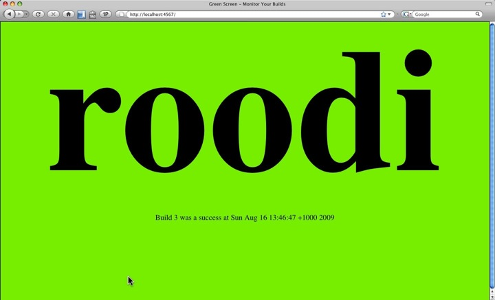
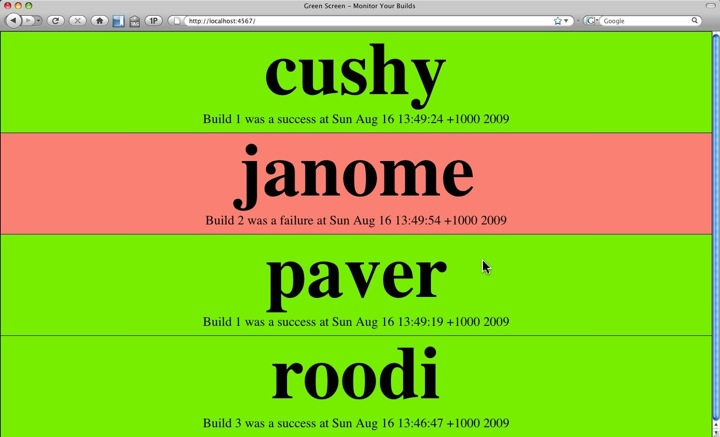
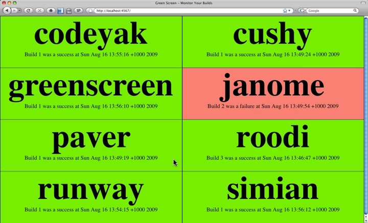

GreenScreen is a build monitoring tool that is designed to be used as a dynamic Big Visible Chart (BVC) in your work area. It lets you add links to your build servers and displays the largest possible information on a monitor so that the team can see the build status from anywhere in the room.
GreenScreen depends on Sinatra to run. You can install it via rubygems:
sudo gem install sinatra
To get the GreenScreen application itself, you can clone it from git here:
git clone git://github.com/martinjandrews/greenscreen.git
Or download the project by clicking on the 'download' link on this page at http://github.com/martinjandrews/greenscreen/.
Once you've got GreenScreen on your machine, edit the config.yml file to add links to your build servers. It contains instructions for how you can add the. GreenScreen has been tested with Hudson, but can be used with any continuous integration server that conforms to the multiple project summary reporting standard described at http://confluence.public.thoughtworks.org/display/CI/Multiple+Project+Summary+Reporting+Standard. This pretty much means that any of the flavours of cruise control should work too.
Once you've got your configuration, you can start GreenScreen as follows:
ruby greenscreen.rb
Then go to this URL in your browser http://localhost:4567. You should see the status of all of your builds. The screen will refresh every 15 seconds to keep itself up to date. GreenScreen will make an educated guess about how to layout the projects on the screen, and what font size to use. You can usually use the browser controls to increase or decrease the font size a bit to maximise visibility for your projects.
NOTE: GreenScreen is set up so that the name of the project will flash when it is building, but neither Safari nor IE support blinking text. You probably want to use Firefox to get the most value out of it. If running on Windows, I'd suggest running Firefox in full screen mode. If on a Mac, either expand the window size to take up as much space as possible, or try finding a plugin that lets you go full screen.
A build server with just one project
A build server with a few projects
A build server many projects. GreenScreen has used two columns to try to fit them in.
A build server with lots of projects. GreenScreen has used three columns now to lay it out better.